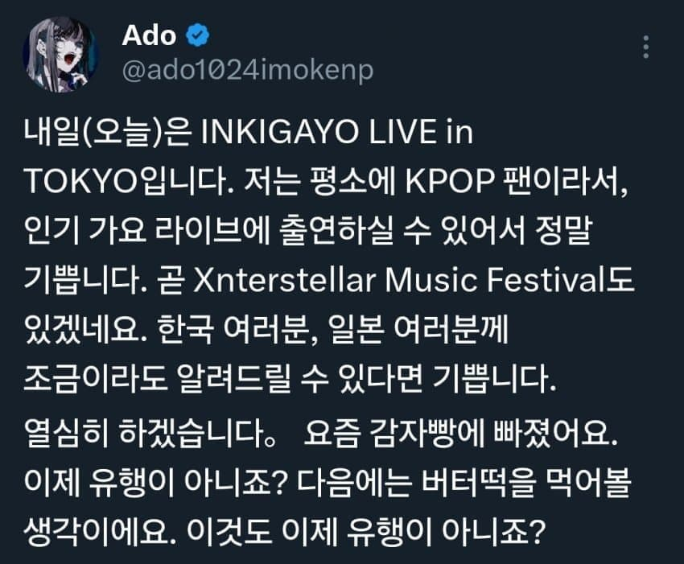
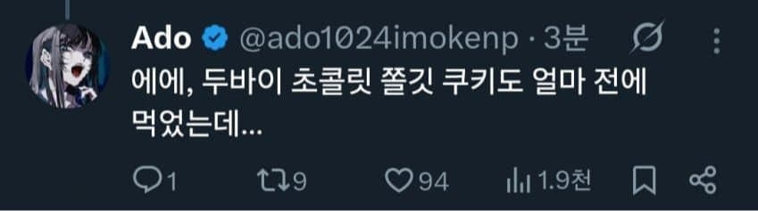
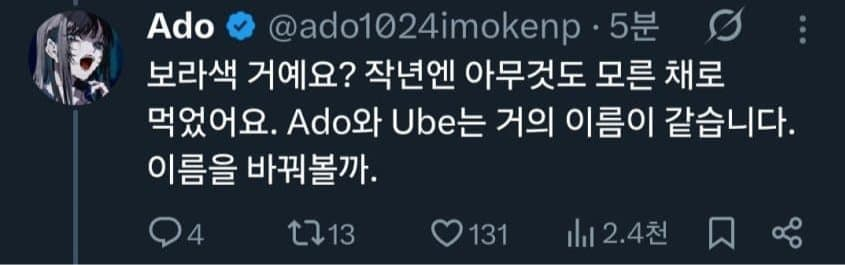
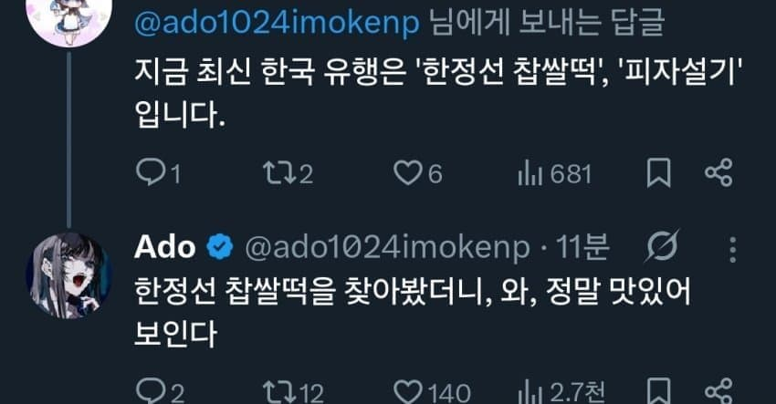
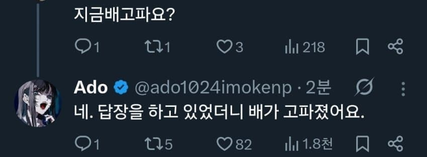
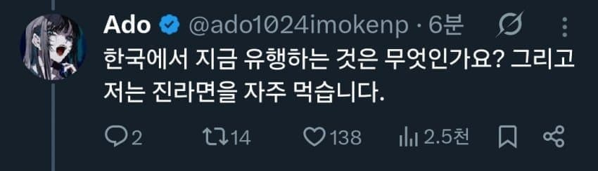
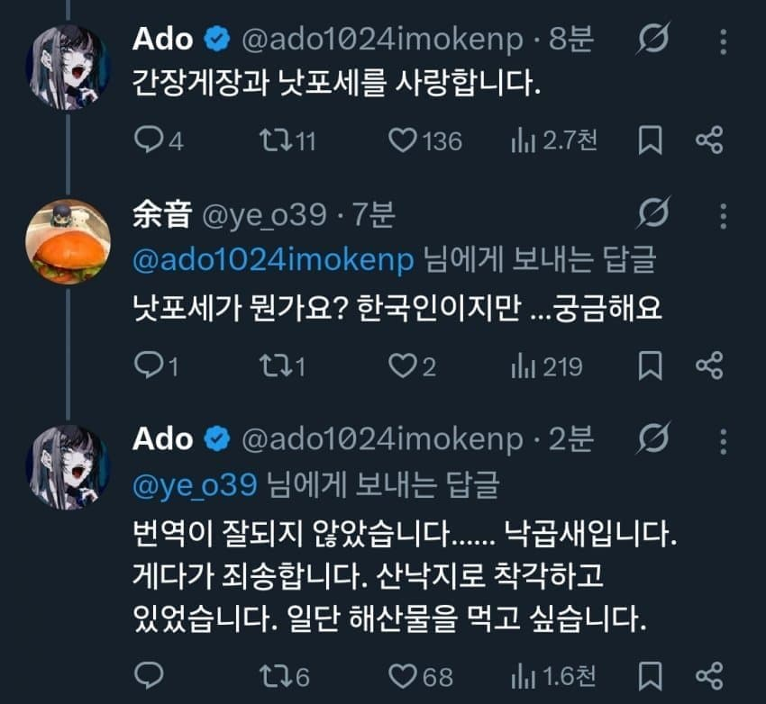
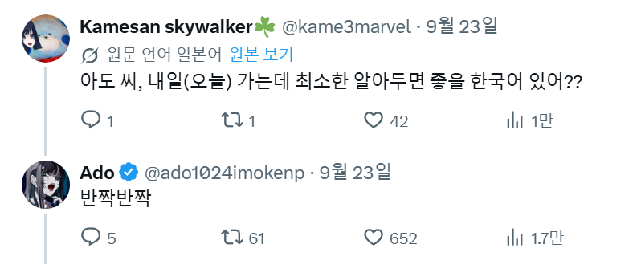

X에서는 번역기능이 자동인데
원문이 어느나라말로 써저있는지 표시가됨
그런데 ado는
한국어로 답글까지 전부 작성할때가 있음
심지어 가장 마지막짤보면
일본어를 쓰는 일본인 댓글에도 한국어로 적음....
ado가 20대 초반의 어린 일본여성이라
한국을 참 좋아하는듯...
내한을 와서도 그냥 공연하고 휙 가는것이 아니라
한국에서 이것저것 다 즐기고 감...
차라리 전형적인 애니오프닝송이라 그러면 이해라도 하겠는데